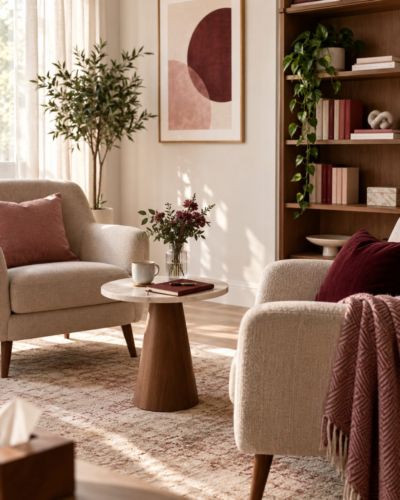

Daha iyi hissetmek, bazen kendinizi şefkatle dinlemekle başlar.
Duygusal düğümleri çözmek için acele etmeden; kendinizle, eşinizle veya ailenizle kurduğunuz bağı yargısız ve huzurlu bir ritimde birlikte keşfedin. Aile danışmanı Tuğba Döngel, online çift terapisi ve bireysel terapi seanslarıyla, nerede yaşarsanız yaşayın güvenli ve gizliliği esas alan bir danışmanlık deneyimi sunar.
Kronik kaygı, duygusal tükenmişlik, öz-şefkat eksikliği ve hayat geçişlerinde kendi merkezinizi yeniden bulmanız için derinlemesine bir içgörü yolculuğu.
Şema & Bilişsel Terapi
02
Çift & İlişki Terapisi
Tekrarlayan tartışma döngülerini kırmak, güveni yeniden inşa etmek ve mesafeli ilişkilerde duygusal yakınlığı onarmak için Gottman temelli çift rehberliği.
Gottman Çift Terapisi
03
Aile & Bağlanma Rehberliği
Kuşaklararası aktarılan örüntüler, sağlıklı sınırlar çekebilme, yeni ebeveynlik rolleri ve aile içi dengeli iletişimin desteklenmesi.
Sistemik Aile Yaklaşımı
04
Güvenli Online Danışmanlık
İstanbul dışı ve yurt dışındaki danışanlar için gizlilik ilkeleri korunan, evinizin konforunda sürdürülen kesintisiz terapi desteği.
Esnek & Şifreli Seanslar

Online Danışma Alanı — Dinginlik ve Gizlilik Esası
Hakkımda & Klinik Yaklaşım
Sizi Bir Etiketle Değil, Bütün Hikayenizle Dinliyorum
Orta Anadolu'da orta halli bir ailenin ikinci çocuğu olarak dünyaya geldim. Çocukluğum, aidiyet ve kimlik arayışının iç içe geçtiği duygusal olarak zengin bir dönemde geçti.
Bugün insan ilişkilerine ve aile dinamiklerine duyduğum ilginin temelleri o yıllarda atıldı. Ankara'da Fizik eğitimi aldıktan sonra İstanbul'da uzun yıllar bankacılık ve özel sektörde çalıştım. Ancak 45 yaşımda hayatımın yönünü kökten değiştirmeye karar verdim ve psikolojik danışmanlık alanına adım attım.
Bu değişim bana şunu öğretti: Hayatın hiçbir döneminde öğrenmek, değişmek ve yeniden başlamak için geç değildir. Bugün bu inançla, danışanlarımın kendileriyle, ilişkileriyle ve hayat yönleriyle ilgili yeni farkındalıklar kazanmalarına eşlik ediyorum.
Size ne hissetmeniz gerektiğinin dikte edilmediği; sadece kendiniz olabildiğiniz, sakinleşip iç sesinizi duyabileceğiniz şefkatli bir alan.
01
Koşulsuz Kabul & Yargısız Dinleme
Dile getirmekte zorlandığınız endişeler veya pişmanlıklar seans odasında birer eksiklik olarak değil, keşfedilmeyi bekleyen insani deneyimler olarak karşılanır.
02
Sizin Temponuzda İlerleyen Ritim
Hızlı sonuç vaatleri yerine; kalıcı içsel dönüşüm için zihninizin ve kalbinizin hazır olduğu derinlikte, aceleye getirmeden adım atarız.
03
Etik, Şeffaf ve Güvenli Sınırlar
Gizlilik ve terapötik etik ilkeleri tavizsizdir. Seansların her anında şeffaf ve profesyonel bir yol arkadaşlığı sürdürülür.
Süreç Nasıl İşler?
Terapiye Başlamak:Sade ve Güven Veren 4 Adım
Belirsizliği ortadan kaldıran, ilk andan itibaren netlik ve sakinlik sağlayan seans hazırlığı.
01
İlk Temas
İletişim formu veya WhatsApp üzerinden seans talebinizi ve uygun olduğunuz zaman dilimlerini iletin.
02
Ön Tanışma
İhtiyaçlarınızı ve beklentilerinizi konuşacağımız 15 dakikalık kısa bir telefon değerlendirmesi gerçekleştirilir.
03
Ortak Hedefler
İlk kapsamlı seansta mevcut tıkanıklıklarınızı ele alarak sürecin frekansını ve odak noktalarını belirleriz.
04
Düzenli Seanslar
Online platformda haftalık / iki haftalık periyotlarla güvenli görüşmeler sürdürülür.
Yaklaşım
Terapi bir yarış veya sınav değil; yüklerinizi yavaşça yere bırakabileceğiniz dingin bir durak.
Her birey ve her sorun için farklılık gösterir. Bazı konular birkaç görüşmede netleşir, uzun süredir yerleşmiş örüntüler daha fazla zaman ister. Belirli bir seans sayısı ya da sonuç garantisi vermiyorum.
Seansların içeriği nedir?
Aile danışmanlığı ve verdiğim diğer tüm danışmanlık hizmetlerinde, ilk görüşme seansından sonra danışanın ihtiyacına yönelik yapılacak değerlendirme süreçleri ve çalışmalar hakkında danışana bilgi verilir.
Bir seans süresi ne kadardır?
Bireysel seans süreleri 60 dakika, çift katılımlı seanslar 90 dakikadır. Süreç genellikle haftalık görüşmelerle başlar; ilerleyen dönemde ihtiyaca göre iki haftalık periyotlara geçilebilir.
Online görüşmeler yeterince etkili oluyor mu?
Alanyazın, uygun koşullar sağlandığında online görüşmelerin etkisinin yüz yüze görüşmelerle benzer olduğunu gösteriyor. Önemli olan sessiz, kesintisiz ve mahremiyetinizin korunduğu bir ortam ile dengeli bir internet bağlantısı.
Çift terapisine eşim katılmak istemezse ne yapabilirim?
Tek başınıza başlamak tamamen mümkün. Bireysel görüşmelerde ilişkiye sizin tarafınızdan bakar; kendi sınırlarınız, ihtiyaçlarınız ve tekrar eden örüntüleriniz üzerine çalışırız. İlerleyen aşamalarda partneriniz katılmak isterse süreç çift danışmanlığına yönlendirilebilir.
Aile danışmanlığına kimler başvurabilir?
Ayrılmak istemeyen ama birlikteyken birbirini anlamakta güçlük çeken çiftler, gelin-kaynana ilişkisi yaşayanlar, nişanlı çiftler ve aile içi iletişim sorunu yaşayan herkes aile danışmanlığından faydalanabilir.
Çift danışmanlığına sadece evli çiftler mi gidebilir, nişanlı çiftler de görüşme yapabilir mi?
Hayır, çift danışmanlığı yalnızca evli çiftlerle sınırlı değildir. Nişanlı çiftler de evlilik öncesinde birbirlerini daha iyi anlamak ve ilişkilerini sağlıklı bir zemine oturtmak için danışmanlık sürecine katılabilir.
Boşanma kararı almadan önce çift danışmanlığı almak fark yaratır mı?
Evet, çift danışmanlığı, ayrılmak istemeyen ama birbirini anlamakta güçlük çeken çiftler için de bir seçenektir. Süreç, kararı yerine geçmek değil, ilişkideki dinamikleri birlikte görebilmenizi ve daha bilinçli bir karar verebilmenizi desteklemek üzerine kuruludur.
Ayrılmış ama aynı evi paylaşan çiftler için danışmanlık faydalı olur mu?
Evet. Resmi olarak ayrılmış olsa da birlikte yaşamaya devam eden çiftlerle de çalışıyorum. Bu süreçte amaç, tarafların birbirini daha iyi anlamasını ve ortak yaşamı daha sağlıklı yönetmesini desteklemek.
Gelin-kaynana ilişkisinde danışmanlık nasıl işler?
Aile danışmanlığı kapsamında gelin-kaynana ilişkilerinde de çalışıyorum. Sürecte, tarafların birbirini anlamakta zorlandığı noktalar ele alınır ve aile içindeki dinamikler bütüncül bir bakışla değerlendirilir.
Ebeveyn danışmanlığı hangi durumlarda gerekir?
Ebeveynlik sürecinde çocukla iletişimde zorlanıldığında, aile içi dinamiklerin yeniden gözden geçirilmesi gerektiğinde ebeveyn danışmanlığı destekleyici bir çalışma alanıdır; danışmanlık hizmetlerim arasında yer almaktadır.
Toksik ilişki ne demektir, nasıl anlaşılır?
Toksik ilişki, kişinin kendini sürekli yıpranmış, değersiz veya sıkışmış hissettiği; ilişkideki örüntülerin zamanla kişinin ruh sağlığını olumsuz etkilediği ilişki biçimidir. Bireysel danışmanlıkta, özellikle 21 yaş ve üzerindeki danışanlarla bu ilişkileri anlamlandırma çalışması yapıyorum.
Yurt dışından online danışmanlık seansına katılabilir miyim?
Evet, seanslarımı dünyanın her yerinden danışanımla online olarak gerçekleştirebiliyorum; yurt dışında yaşıyor olmanız sürece katılmanıza engel değildir.
Online seanslar için hangi program kullanılıyor, teknik bir bilgi gerekiyor mu?
Seanslar görüntülü görüşme üzerinden yürütülür ve katılmak için özel bir teknik bilgiye ihtiyacınız yoktur; randevu sonrasında görüşme bilgileri tarafınıza iletilir.
İlk seansta neler konuşulur?
İlk seans, mevcut durumunuzu ve ihtiyaçlarınızı birlikte değerlendirdiğimiz bir görüşmedir. Bu değerlendirmenin ardından sürecin nasıl ilerleyeceği hakkında size bilgi verilir.
Danışmanlığa başlamadan önce hazırlık yapmam gerekir mi?
Hayır, özel bir hazırlık yapmanıza gerek yok. Sürece açık olmanız ve yaşadıklarınızı paylaşmaya istekli olmanız yeterlidir; geri kalanını birlikte şekillendiriyoruz.
İlk Adım
“Bazen sadece derin bir nefes alıp birinin sizi gerçekten dinlemesine izin vermek gerekir.”
Kendi evinizin huzurlu bir köşesinden, dünyanın neresinde olursanız olun; ilk adımı güvenle atabilirsiniz.
Çiftlerle, ailelerle ve ilişkilerinde tıkandığını hisseden kişilerle çalışıyorum. Görüşmelerde amacım kimin haklı olduğunu bulmak değil; tekrar eden dinamiği birlikte görünür hâle getirmek.
Mesleki Bilgiler
{{ c.label }}{{ c.value }}
Eğitim
{{ e.label }}{{ e.value }}
Kurumsal iletişimden aile danışmanlığına
Orta Anadolu’da, orta halli bir ailenin ikinci çocuğu olarak dünyaya geldim. Doğduğum şehir, siyasi çalkantıların ve toplumsal gerilimlerin yoğun olduğu bir dönemden geçiyordu; elbette ailem de bundan etkilendi.
Çocukluğumun bir bölümü, ait olduğumuz yeri ve kendimizi anlamaya çalıştığımız; kimi zaman kucaklandığımız, kimi zaman itilip dışlandığımız, duygusal olarak karmaşık bir ortamda geçti. Bugün insan ilişkilerine, aile dinamiklerine ve hayatımızdaki değişimlere duyduğum ilginin kökleri, belki de o yıllarda şekillendi.
Üniversitede Fizik Bölümü’nü seçtim ve öğrencilik yıllarım Ankara’da geçti. Ardından İstanbul’a uzanan hayatımda uzun yıllar bankacılık sektöründe çalıştım. Özel sektörde farklı alanlarda deneyim kazandım; yaptığım işleri seviyor ve başarıyla yürütüyor olsam da, bir noktadan sonra bu işlerin beni ve sahip olduğum potansiyeli tam olarak yansıtmadığını fark ettim.
45 yaşından sonra hayatımda radikal bir karar alarak kariyerimi değiştirdim. Bu karar benim için yalnızca bir meslek değişikliği değildi; kendime “Hayatımın bundan sonrasını nasıl yaşamak istiyorum?” sorusunu sorduğum ve bu sorunun peşinden gitmeye cesaret ettiğim bir dönüm noktasıydı.
Bugün hâlâ öğreniyor, okuyor, araştırıyor ve kendimi geliştirmek için bilinçli olarak çaba gösteriyorum; çünkü hayatın hiçbir döneminin öğrenmek, değişmek ve yeniden başlamak için geç olmadığına inanıyorum. Hatta kendi hayatım, bunun yaşayan bir kanıtı.
Bugün aile ve çift danışmanlığı yaklaşımımın temelinde de bu inanç var: İnsan, hayatının herhangi bir döneminde kendisiyle, ilişkileriyle ve yaşamıyla ilgili yeni bir şey fark edebilir; öğrendiklerini yeniden değerlendirebilir, davranışlarını değiştirebilir ve hayatının yönünü yeniden belirleyebilir.
Bireysel seanslar 60 dakika, çift seansları 90 dakika sürüyor. Görüşmeler online yapılıyor; dünyanın her yerinden randevu planlayabiliyoruz. Ücret bilgisi için doğrudan iletişime geçebilirsiniz.